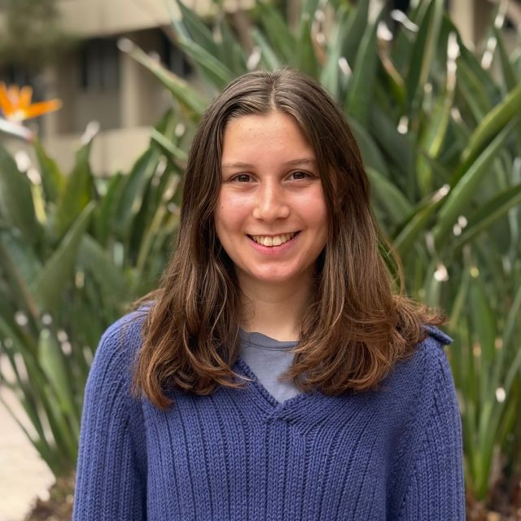

Sidra is a first year MA/Phd student in Geography at UCSB. She is advised by Professor Alan Murray and part of the Wildfire Resilience Initiative. Her research interests include GIScience, machine learning, spatial optimization, and wildfire risk and mitigation. She holds a BA in Computer Science from Lewis and Clark College.